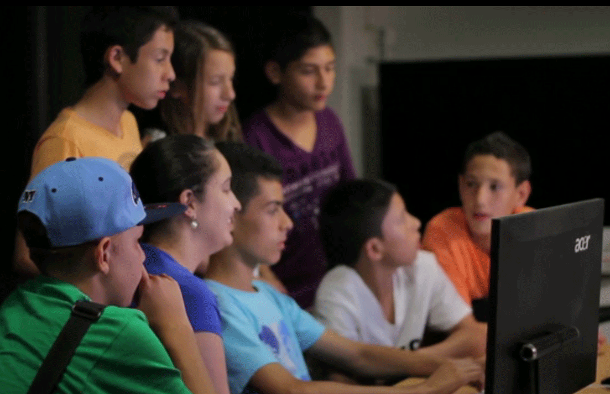
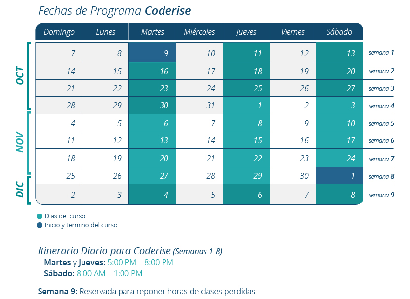

¿Cómo funciona Coderise?
Duración y estructura
El programa piloto gratuito de Coderise empezará el 9 de Octubre con 20 estudiantes de la ciudad de Medellín, Colombia. Durante 8 semanas aprenderán a conceptos sobre computación y desarrollo de software, enfocado a aplicaciones web, bajo las instrucciones de dos instructores. Para complementar las clases, los participantes tendrán la oportunidad de conocer y hablar con emprendedores e ingenieros de Colombia y de los Estados Unidos.
Las clases están dividas en dos partes. La primera mitad de cada clase se enfoca en aprendizaje de conceptos y la segunda mitad en la aplicación de los mismo en un proyecto para diseñar una aplicación web. Al finalizar el programa, los participantes presentarán sus proyectos durante la última semana del programa.
Temas de aprendizaje en Coderise
Al finalizar el programa los coderisers estarán en capacidad de:
- Reconocer y entender tecnologías para el desarrollo de aplicaciones web tales como HTML, CSS, Javascript, Ruby On Rails y bases de datos.
- Explicar y enseñar conceptos aprendidos a otros estudiantes
- Aprender a aprender
- Entender que el fracaso hace parte del proceso de aprendizaje
- Entender la comunidad de software libre, sus beneficios y cómo contribuidor a ella
- Identificar problemas en su comunidad y proponer soluciones por medio del desarrollo de software
- Crear un Producto Mínimo Viable
Mentores de Coderise
Cada Sábado, después de avanzar aprendizaje de materias de 8:00 AM a 11:00 AM, habrán charlas con distintos mentores de Coderise, exitosos profesionales en el mundo tecnológico. Estos contarán sus experiencias, hablarán de su trayecto como profesionales y estarán abiertos a preguntas de los coderisers. [Conoce más de los mentores de Coderise aquí]
Actividades y eventos de Coderise
- Visita recreativa al Parque Arví con el grupo
- Meetups de comunidad de programadores en Medellín
- Mini Coderise Hackathon (aún por confirmar)
Itinerario de Programa Coderise

Fechas de Programa Coderise
Primer día de clases: 9 de octubre
Ultimo día de clases: 1 de diciembre
Semana 9: Reservada para reponer horas de clases perdida
Itinerario Diario para Coderise (Semanas 1-8)
Martes y Jueves: 5:00 PM – 8:00 PM
Sábado: 8:00 AM -1:00 PM